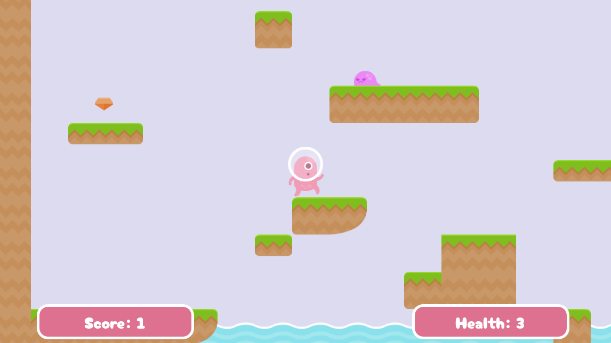
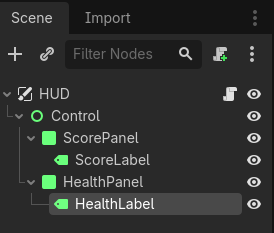
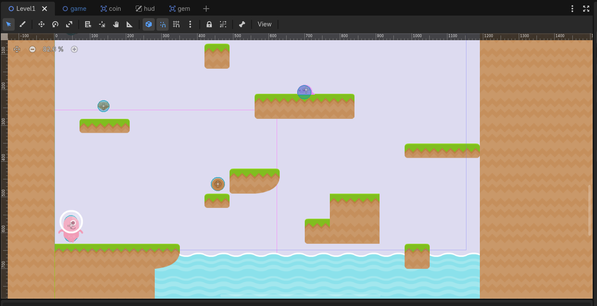

Video Tutorials
━━━━━━━━━━━━━━━━━━━━
Section 6: Health, Score & HUD
Add health and scoring systems to your game with a Heads-Up Display (HUD) showing player status.
Adding a HUD to the Game Manager
The HUD (Heads-Up Display) will show the player's health and score during gameplay.
- Create a new scene
- Add a CanvasLayer node as the root node
- Rename it to "HUD"
Creating HUD Elements
- Add a Canvas node as a child of HUD
- Add a Label node as a child of Canvas
- Rename it to "ScoreLabel"
- Set its text to "Score: 0"
- Position it in the top-left corner
- Add another Label node
- Rename it to "HealthLabel"
- Set its text to "Health: 3"
- Position it next to the ScoreLabel
Setting Up Game Variables
We'll add health and score variables to our Game.gd script so they can be accessed from anywhere in the game.
- Open your Game.gd script
- Edit your script with the following:
extends Node2D
var current_level_node
var current_level = 1
# Health and Score
var health = 3
var score = 0
var max_health = 5
func _ready():
load_level(current_level)
# Score functions
func add_score(amount):
score += amount
update_hud()
print("Score: " + str(score))
func get_score():
return score
func reset_score():
score = 0
# Health functions
func take_damage(amount):
health -= amount
update_hud()
print("Health: " + str(health))
if health <= 0:
health = 0
game_over()
func heal(amount):
health = min(health + amount, max_health)
update_hud()
func get_health():
return health
func reset_health():
health = max_health
# Game state functions
func game_over():
get_tree().change_scene_to_file("res://Scenes/GameOver.tscn")
func win_game():
get_tree().change_scene_to_file("res://Scenes/Win.tscn")
func reset_game():
current_level = 1
reset_health()
reset_score()
get_tree().change_scene_to_file("res://Game.tscn")
# Level loading (from Section 4)
func load_level(level_number):
current_level = level_number
if current_level_node:
current_level_node.queue_free()
var level_path = "res://Scenes/Levels/Level" + str(level_number) + ".tscn"
if ResourceLoader.exists(level_path):
var level_scene = load(level_path)
current_level_node = level_scene.instantiate()
add_child(current_level_node)
else:
print("Level not found: " + level_path)
func get_current_level_node():
return current_level_node
# HUD update
func update_hud():
if has_node("HUD"):
get_node("HUD").update_display()score_to_win is a variable that sets how
many points the player needs to win the game.

Finding the Game Node
Add a script to the HUD that updates whenever the health or score changes.
- Select the HUD (CanvasLayer) node
- Add a script to it
extends CanvasLayer
@onready var score_label = $ScoreLabel
@onready var health_label = $HealthLabel
var game
func _ready():
# Find the Game node (the parent of the HUD)
game = get_parent()
update_display()
func update_display():
if game:
score_label.text = "Score: " + str(game.score)
health_label.text = "Health: " + str(game.health)Triggering Updates from Game.gd
In Game.gd, we already added update_hud() calls in the health and score
functions.
# In Game.gd
func update_hud():
if has_node("HUD"):
get_node("HUD").update_display()get_parent() returns the Game node.
Connecting Enemy Hits to Health
When the player touches an enemy, we need to reduce health and provide feedback.
- Open the Enemy script
- Modify the hit signal to reduce player health:
# In Enemy.gd
@onready var hit_box = $HitBox
func _ready():
hit_box.hit_player.connect(_on_hit_player)
func _on_hit_player():
# Find the Game node and take damage
var game = get_tree().current_scene
if game and game.has_method("take_damage"):
game.take_damage(1)Adding Invincibility Frames
To prevent the player from being damaged every frame, add a brief invincibility period:
# In Player.gd
var hurt = false
var hurt_timer = 0.25
# Connect to a signal from the enemy or use a separate method
func take_damage_from_enemy():
if !hurt:
hurt = true
# Visual feedback (flash sprite)
animated_sprite_2d.play("hurt")
animated_sprite_2d.modulate = Color(1, 0, 0, 0.8)
await get_tree().create_timer(hurt_timer).timeout
hurt = false
animated_sprite_2d.modulate = Color(1, 1, 1, 1)get_tree().current_scene gets the current
root scene. Since Game.tscn is the root, this finds the Game node.
Creating a Score Pickup
We'll create a simple coin or gem that adds to the player's score when collected.
- Create a new scene with Area2D as the root
- Name it "Coin" (or "Gem" or "Star")
- Add a Sprite2D or AnimatedSprite2D with a collectible visual from your asset pack
- Add a CollisionShape2D
- Save it as "(insertcollectibletype)tscn"
Collection Script
extends Area2D
func _ready():
body_entered.connect(_on_body_entered)
func _on_body_entered(body):
if body.name == "Player":
# Find the Game node and add score
var game = get_tree().current_scene
if game and game.has_method("add_score"):
game.add_score(10)
queue_free()Place coins throughout your level in Level1.tscn.
Testing the Complete System
- Open Game.tscn
- Press F5 to run the game
- Collect coins and watch the score increase
- Touch an enemy and watch health decrease
- Check that the HUD updates correctly
- Test hurt animation by touching the enemy repeatedly
Troubleshooting
- Score doesn't update: Check that game.add_score() is called and HUD update works
- Health doesn't decrease: Check that the enemy signal is connected properly
- HUD doesn't show: Check that CanvasLayer is in Game.tscn
